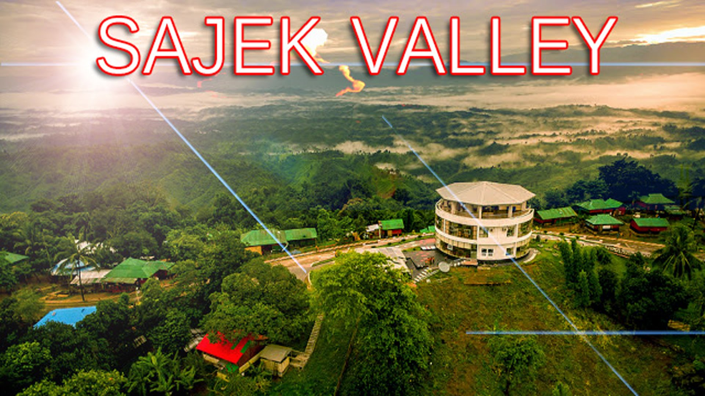
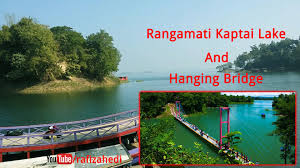
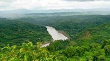
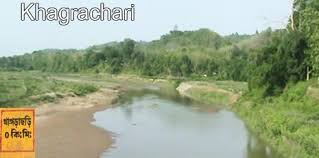
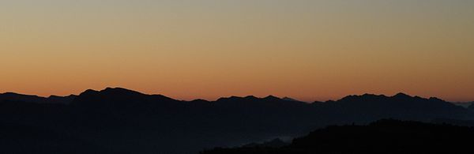

Welcome to hill tract
Sajek was unexplored for a long time and recently it emerged as a tourist spot for it’s outstanding natural beauty. The place does not have modern tourist facilities but tourists mostly enjoy the nature and culture of the place. Though the valley is in Rangamati but to tourists prefer the route from Kagrachari to Sajek valley through Dighinala Bazaar, Bagaihat Bazaar and Machalong Haat. Major transport is Chander Gari which is like a four wheel jeep. Tourists can also go to Sajek from Rangamati by engine vessel. It takes 5–6 hours in that route.[1] It is included in our a1 package
Hill tract in Bangladesh
-  Rangamati (Chakma: 𑄢𑄋𑄟𑄖𑄳𑄡) is the administrative headquarters of Rangamati Hill District in the Chittagong Hill Tracts of Bangladesh. It is also a Capital city of Chittagong Hill Tracts. The town is located at 22°37'60N 92°12'0E and has an altitude of 14 metres (46 ft).[1] The district is administered by an office named as District Administration, Rangamati.
-  Bandarban (Bengali: বান্দরবান) is a district in South-Eastern Bangladesh, and a part of the Chittagong Division..
-  khagrachori is one of the hill tract distract distict of Bangladesh situated in chittagong division.
Mountains
Bangladesh is a low-lying country. Only exceptions are the Chittagong Hills in the southeast, the Low Hills of Sylhet in the northeast and highlands in the north and northwest.Kala pahar(1,098 ft) is the highest point of greater Sylhet and also the northern part of Bangladesh. The Chittagong Hills constitute the only significant hill system in the country. The Chittagong Hills rise steeply to narrow ridge lines, with altitudes from 600 to 1000 meters above sea level. At 1,063 m(3,488 ft) altitude, the highest elevation in Bangladesh is Saka Haphong at Mowdok range, in the southeastern part of the hills. Highly elevated peaks of this area can also be called as mountains cause hill above 2000 ft(600m) with a distinct peak referred as mountain. 75 such mountains have been identified and mapped in the Hill Tracts.[1] Fertile valleys lie between the hill lines, which generally run north-south. West of the Chittagong Hills is a broad plain, cut by rivers draining into the Bay of Bengal, that rises to a final chain of low coastal hills, mostly below 200 meters,